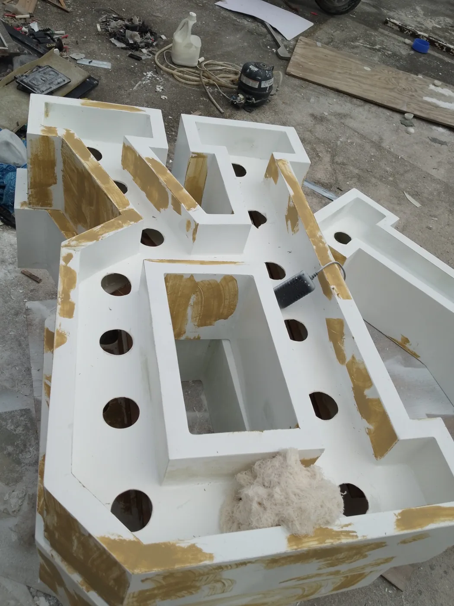
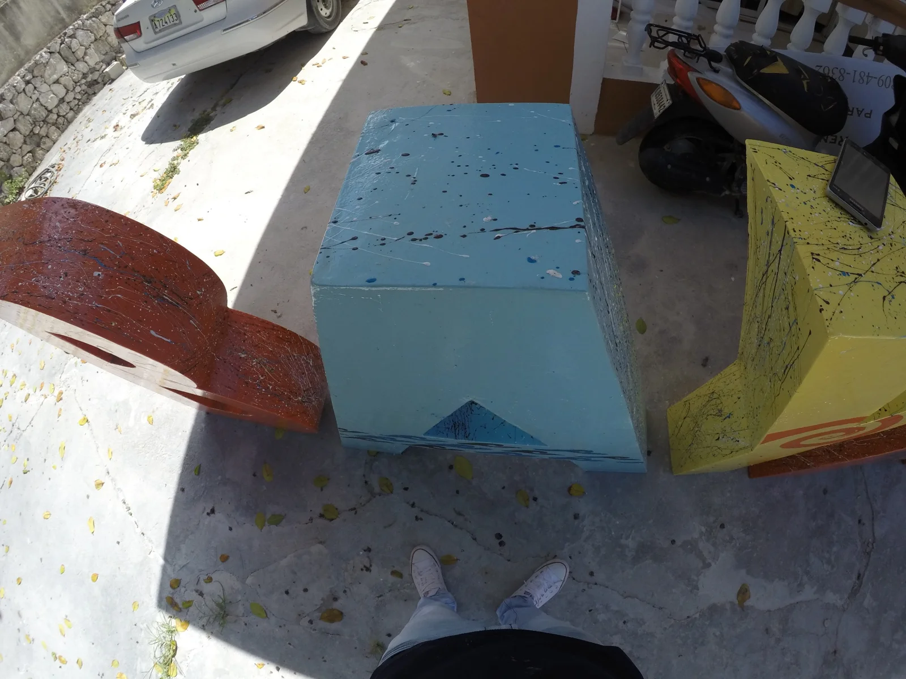

Proceso de fabricación
Letras: preparación y acabado
Masilla, lijado y pintura: distintas etapas del trabajo en letras de gran formato.


De una idea podemos empezar.
Si tienes una referencia, unas medidas o una necesidad concreta, podemos evaluar cómo llevarla a producción.